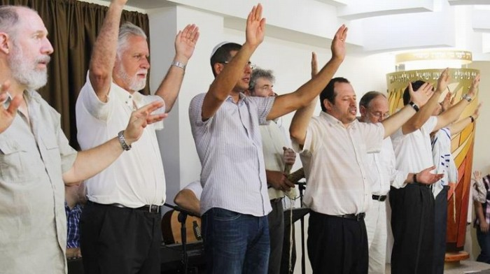
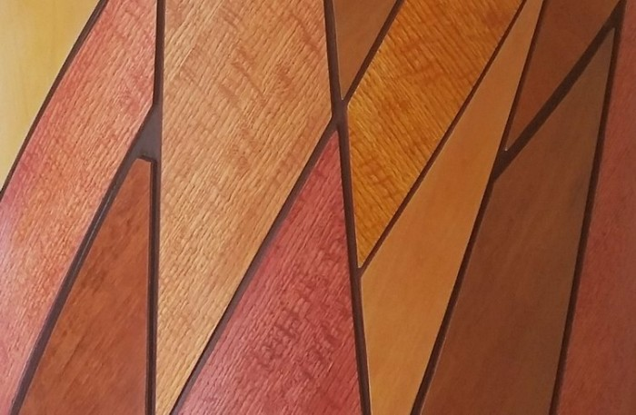
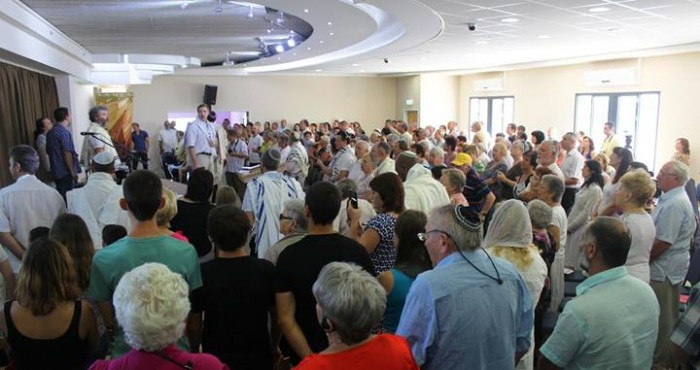
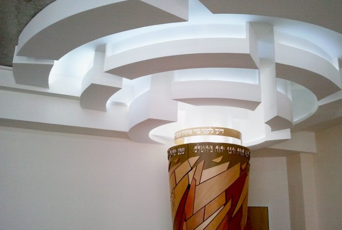
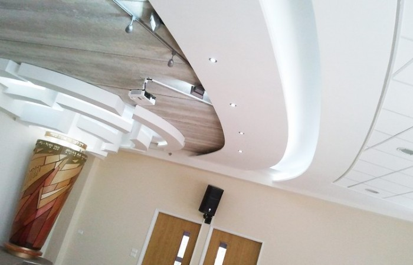

Арт-мидраш · Артефакты · Галереи · Библия и художник
Знай ПРЕД КЕМ ты стоишь! СТОЛП ОГНЕННЫЙ
Первое, что приковывает внимание сразу, как только входишь в молитвенный зал этой синагоги - полыхающий столп - знак ШАВУОТА, который как вспышка ярчайшего света озаряет оба Завета: Синайский, заключенный с отцами нашими, когда они стояли у подножья горы и она тряслась. И звук шофара был весьма сильный. И сошел ГОСПОДЬ в столпе огненном и говорил там посреди народа Своего (см. Тора: Исход 19:16-20). И другой Завет - Новый, заключенный с Израилем и Домом Иуды (Иер.31:31).
Композитор Даниэль Круглов


Этот огонь, вспыхнувший языками пламени на учениках Мессии, собравшихся в Иерусалиме и ожидавших наступления праздника Шавуот разгорелся по всему лицу земли, захватывая страны и континенты, воспламеняя сердца и запечатлевая на них слова Торы.
 "ДА ЛИПНЕЙ МИ АТА ОМЕД!" Ивр.: Знай пред Кем ты стоишь! - это обращение можно увидеть почти на каждом арон а-кодеш (ивр. - священный ковчег - главный объект любой синагоги, шкаф для хранения свитков Торы). Эту надпись несет на себе и специально спроектированный, недавно построенный и уникальный в своем роде арон а-кодеш мессианской общины "Шовей Цион" в Хайфе.
"ДА ЛИПНЕЙ МИ АТА ОМЕД!" Ивр.: Знай пред Кем ты стоишь! - это обращение можно увидеть почти на каждом арон а-кодеш (ивр. - священный ковчег - главный объект любой синагоги, шкаф для хранения свитков Торы). Эту надпись несет на себе и специально спроектированный, недавно построенный и уникальный в своем роде арон а-кодеш мессианской общины "Шовей Цион" в Хайфе.


В сердце ковчега - как бы огненного столпа, помещаются свитки Торы, читаемые по всем синагогам каждую субботу. (Деян.15:21)


 фото Эфраима и Веты Калишей
См. видео: создатели ковчега для свитков Торы (арон а-кодеш) автор дизайна арх. В. Калиш и конструктор, краснодеревщик Мимс Вард в процессе строительства хранилища для Торы
фото Эфраима и Веты Калишей
См. видео: создатели ковчега для свитков Торы (арон а-кодеш) автор дизайна арх. В. Калиш и конструктор, краснодеревщик Мимс Вард в процессе строительства хранилища для Торы
Больше о замысле и символике арон а-кодеш и дизайна молитвенного зала в целом читайте в статье Веты Калиш "Авангардный АРТ-ДИЗАЙН СИНАГОГИ"